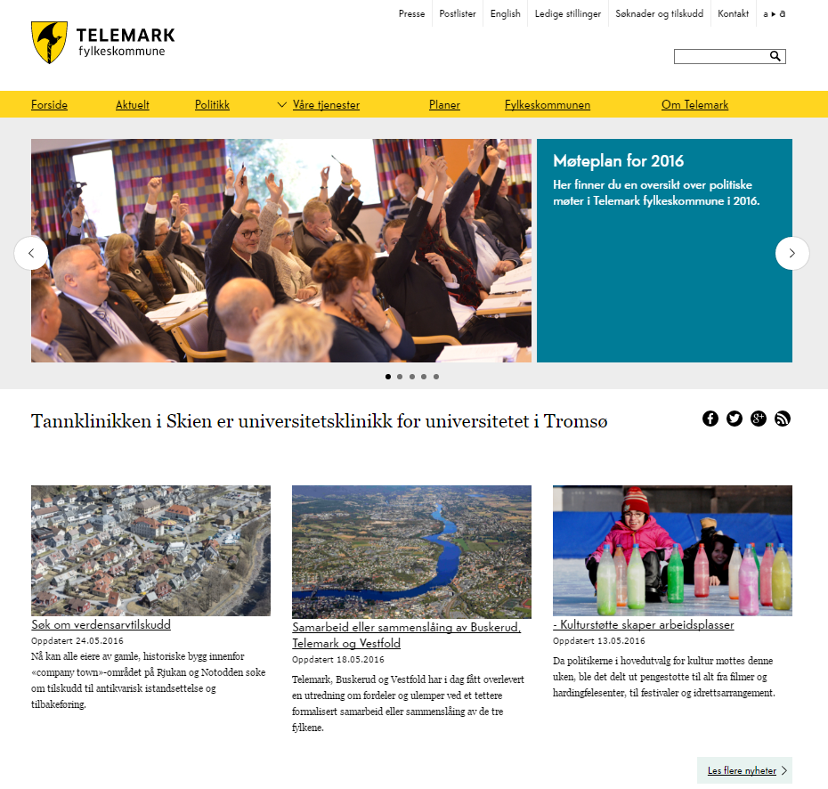
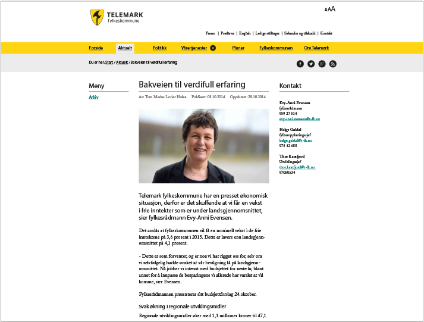
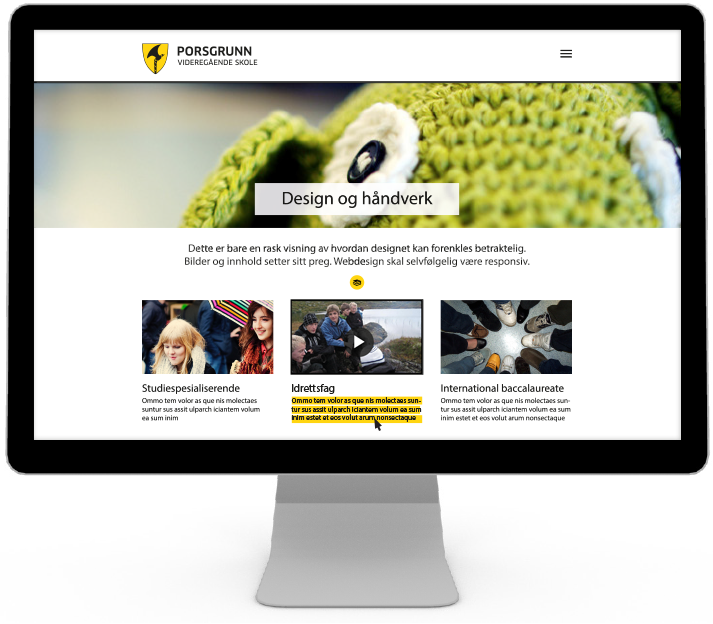
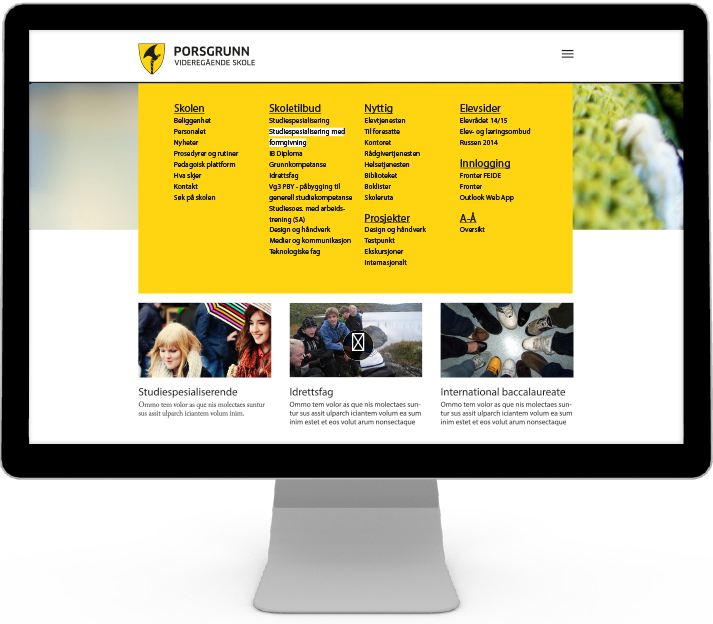

Web prinsippskisser
Dette er ikke Telemark fylkeskommunes webdesign. Dette er prinsippskisser basert på gammel wireframe. Skissene viser riktig uttrykk, bruk av farger og typografi på digital flate i henhold til ny profil. Visuelt inntrykk skal være hvitt, gult, svart, grått og foto. Nettsider eller andre digitale flater utvikles på grunnlag av dette uttrykket.
Mønster er ikke lenger en del av den visuelle identiteten.
Gult brukes i hovedmeny og på knapper.
All typografi er svart.
Støttefargen turkis brukes i rastrert utgave (altså ikke 100 % farge), og er et supplement til gulfargen. Den skal ikke være dominerende i fargeuttrykk, og kun være på meget små områder, som f.eks. knappen «Prosjekter» illustrert til høyre.
Fonten Telefon brukes på hovedmeny, rullerende tekst og i knapper.
Georgia brukes i løpende tekst og og små infotekster.
Alle lenker i meny er understreket. Alle lenker i tekst er understreket og satt i fargen #007fa.
Se eget kapittel om farger på web.
Forside

Artikkelside

Virksomhetsområde
 